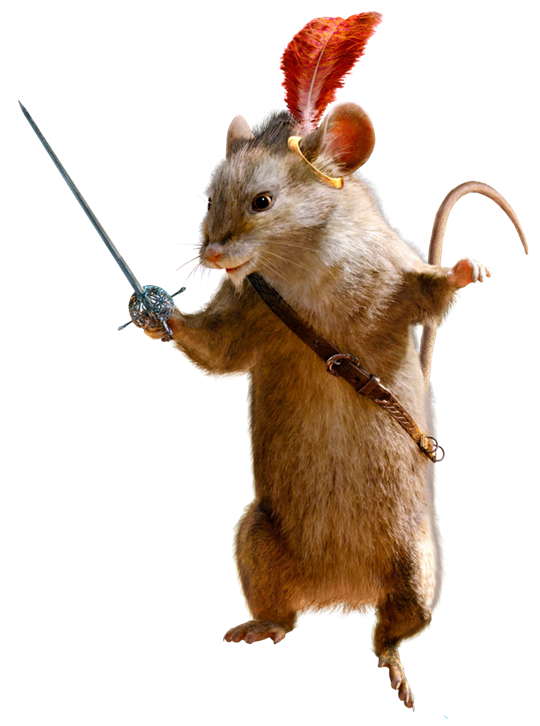

出典：
Ø 送报纸的虎面具
Ø 纳尔逊之血
Ø 巨大屏幕
Ø 雷普契普
Ø 疯狂茶会
Ø 威治伍德陶瓷
Ø 陌生人的gift
Ø 富士电视台
Ø 午间综艺节目
Ø N公司
Ø 三月兔
Ø 榛睡鼠
Ø 疯帽匠
Ø 中野
Ø 法式咸派
出典：
在过去40多年来，日本男子原田吉郎（Yoshiro Harada）一直穿着醒目的服饰，并戴着老虎面具在东京市新宿区送报纸。如今，他已经成为该地区的传奇人物，素有“新宿老虎”的称号。
原田吉郎于1948年出生在长野县，现年71岁，他是《朝日新闻》送报部门的员工，其服务范围在新宿区东部。自1972年起，他开始戴着老虎面具在街上送报纸，迄今已有47年的时间。他于1967年搬到东京，以就读大东文化大学。他在上大学时就开始送报纸，但最后决定退学，以便专心送报纸。
在1972年的某一天，当时24岁的他在参加一项神社庆典时，看到商家在卖老虎面具，当下决定将以老虎的面貌度过余生，于是购买了30个老虎面具。自从那一天起，原田吉郎每天都戴着老虎面具，包括在送报纸的工作时间以及下班后的私人时间。他只有在有需要时才会取下面具。
在第六章还可以得知游戏中的虎面具的另一个身份是《小熊维尼》中的跳跳虎。
_Prologue.files/image002.jpg)
Figure 1. 送报纸的虎面具
纳尔逊之血，代指朗姆酒（Rum）。纳尔逊是指海军中将第一代纳尔逊子爵霍雷肖·纳尔逊，英国18世纪末及19世纪初的著名海军将领及军事家，在1798年尼罗河战役及1801年哥本哈根战役等重大战役中带领皇家海军胜出，他在1805年的特拉法加战役击溃法国及西班牙组成的联合舰队，但自己在战事进行期间中弹阵亡。
在他牺牲后，他的尸体被浸泡在朗姆酒中，以免腐烂并被带到英国。 但是，所有朗姆酒在回家之前都敬仰他的士兵喝掉了。
_Prologue.files/image003.jpg)
Figure 2. 纳尔逊肖像
位于新宿ALTA（Studio ALTA）的巨大萤幕。
新宿ALTA商场对年轻女性而言是时尚圣地。这里有各式各样的服饰、鞋类、配件。位于JR新宿站东口对面拥有巨型萤幕的大楼，是新宿热门的会面点。
Figure 3. 新宿ALTA实景
雷佩契普，出自《纳尼亚传奇》，被描绘为一名老鼠剑客，能言老鼠的领袖，它彬彬有礼而无所畏惧，拥有强烈的自尊心，非常重视荣誉。
《凯斯宾王子》里描述，雷普契普比一般的老鼠还要大，用两条腿站起来有一呎多高。其腰间挂着一根剑，在说话时习惯捻著它的老鼠胡须。后来，老脾气的耳朵上还挂着一只金环，上面插著一根红羽毛。

Figure 4. 雷普契普
疯狂茶会，出自《爱丽丝漫游仙境》第七章，内容是爱丽丝和三个疯子的古怪茶会。主要角色为爱丽丝，帽匠，睡鼠和三月兔。和原作不同的是Forest的时间停在12点，是早茶；而原作的时间是下午6点，是下午茶。
顺便提一句，我看过英文原著，茶会中的猜谜游戏（riddle）以及睡鼠讲故事（Tell us a story!）均是首次在疯狂茶会出现的原句，并且在游戏中被直接引用。
茶会除了爱丽丝以外的三位主要角色：
|
Dormouse |
睡鼠，黛的gift，睡鼠Dormouse |
|
Hare |
兔属，刈谷的gift，三月兔 March Hare |
|
Silk hat |
男式装饰帽，九月的gift，疯帽匠 Mad Hatter |
Figure 5. 疯狂茶会
威治伍德是一家英国陶瓷公司，由约书亚·威治伍德创立于1753年，是英国工业革命时代设立的工厂之一，并且在1987年与瓦德福水晶（Waterford Crystal）合并成为瓦德福威治伍德（Waterford Wedgwood），合并以前的管理者大多是达尔文-威治伍德家族成员。
_Prologue.files/image007.jpg)
_Prologue.files/image008.jpg)
Figure 6. Wedgewood茶杯和中国风瓷器
以下人物均出自《爱丽丝漫游仙境》第八章，王后的槌球场：
○ Card official
纸牌官员，原作中穿着方片图案。
○ Card soldier
纸牌士兵，斩首官。 与国王和王后讨论柴郡猫的脖子。 原来穿着草花图案。
○ Card gardener
纸牌园丁，误把红玫瑰种成白玫瑰的可怜人。为了瞒过女王，在花上涂油漆，被识破后和爱丽丝一起被判处死刑。 然而，爱丽丝机智地逃脱了死刑审判。 在原作中，园丁穿着黑桃图案，并且在站立的画面中带有画笔。
Figure 7. 纸牌园丁
○ Card aristocrat
纸牌贵族，应该是神经兮兮，喜欢砍头的女王本人。在原作中，女王穿着红桃图案。
○ Behead
砍头。在《爱丽丝漫游仙境》第八章中，女王一个不高兴就会命令砍下手下的头，虽然是否真正执行在原作中没有定论。
_Prologue.files/image010.jpg)
Figure 8. 女王下令砍头
一种gift，直译为法语的陌生人，外邦人，不速之客的意思。
爱丽丝在最初的疯狂茶会中的位置。所以从原作的角度来看，雨森对于茶会来说也是不速之客。
即富士电视台。简称“CX”（源自其识别呼号JOCX-DTV），为日本一家以关东地方为主要播放区域的无线电视台，是富士新闻网（FNN，提供新闻节目）及富士电视网（FNS，提供新闻以外的节目）两家电视联播网的核心局。开播于1959年3月1日，为各核心局中第四家开播的电视台，遥控器号码自开播以来一直是第8频道。
Figure 9. 富士电视台第一代台标“8”标志
即富士电视台自1982年开始播出的《森田一义时间 笑一笑又何妨！》。由塔摩利主持，是世界播出时间最长的由同一人主持的现场直播节目。
该节目长期在中午12点在新宿阿尔塔摄影棚现场直播，诞生了“TELEPHONE SHOCKING”等众多著名企划，其主持人塔摩利也因该节目被认为是最能代表日本午间时段的人物。2013年，塔摩利在节目中表示《笑一笑又何妨！》将在翌年播毕，引发日本社会轰动。在播出结束之前，萩本钦一、安倍晋三等重量级人物相继出演该节目。《笑一笑又何妨！》最后一集TELEPHONE SHOCKING嘉宾是北野武，创下16.3%的平均收视率。当晚播出的特别节目更创下28.1%的收视率。
Figure 10. 节目摄影棚所在的ALTA大厦。爱丽丝参加，灰流和雨森观看的都是这一节目。第一章提到的主持人即该节目主持人森田一义。
虽然公司名字并未写明，但是其发音“nogata”非常清楚，现实原型不明。联系一下forest日文可以写作罗马字mori（森），合起来就是monogatari（故事），这是否是一个有意的文字游戏呢？
《爱丽丝漫游奇境记》中的角色。
在卡罗尔的这部著名作品中有一段描述。
当爱丽丝走到一个三岔路口时，路口上标志着两个牌子，一条路通往帽匠的住所，而另一条路通往三月兔的住所。爱丽丝不知道该选择哪一条路。这时有人告诉她：
“这两个人都是疯子。”
“区别是，三月兔只在三月发疯，而帽匠一年四季都是疯的。”
爱丽丝不想再遇到疯子。因为当时不是三月，于是爱丽丝决定去找三月兔而不是帽匠。结果当她来到三月兔的家时，发现帽匠正在拜访三月兔。于是她很有幸地同时拜访了两个疯子。
《爱丽丝梦游仙境》里的虚构人物，在第七章〈无聊的话茶会〉中登场。
第七章开头，当爱丽丝抵达三月兔（英语：March Hare）房子前的餐桌时，睡鼠正坐在疯帽匠（英语：Hatter (Alice's Adventures in Wonderland)）和三月兔两人的中间呼呼大睡，其他两人拿它的身体当作靠垫。
睡鼠在现场总是睡着，然后每隔一段时间醒来，例如：
“按照你的说法，”睡鼠似乎在熟睡时说：“‘我睡觉的时候才呼吸’与‘我呼吸的时候才睡觉’这两句话也是一样的喽！”
它还讲述了一个有关三个小女孩的故事，她们生活在糖浆里，汲取各种以M字开头的东西，例如老鼠夹（Mousetrap）、月亮（Moon）和记忆（Memory）。当爱丽丝离开这个古怪的茶会时，她最后见到疯帽匠和三月兔正试图将熟睡的睡鼠塞进茶壶里。
后来睡鼠又再度出现在第十一章〈谁偷了果馅饼〉中，当红心王后（英语：Queen of Hearts (Alice's Adventures in Wonderland)）与红心国王（英语：King of Hearts (Alice's Adventures in Wonderland)）正在法庭上询问证人厨娘果馅饼是用什么材料作成的时候，在后面的睡鼠贸然回答说是“蜜糖”，这回答让王后十分震怒，扬言要砍掉它的头或将其赶出法庭，这随即在法庭上造成了一番混乱。
疯帽匠首次出现在刘易斯·卡罗尔1865年的小说《爱丽丝梦游仙境》中。在其中，疯帽匠向爱丽丝解释说他和三月兔总是喝茶，因为当他试图为脾气暴躁的红心皇后唱歌，她以“谋杀时间”判处他死刑，但他逃脱了斩首。为了报复，时间（小说中被称为“他”）使疯帽匠静止，让他和三月兔永远停留在18:00（或6:00 pm）。
当爱丽丝到达茶话会时，疯帽匠喜欢在随意切换桌子上的位置、发表简短的个人言论、要求解出的谜语以及背诵无意义的诗歌，所有这些最终都将爱丽丝赶走了。帽匠再次出现是在红心武士审判中，女王似乎认为他是她将被判处死刑的歌手。红心武士还警告他不要紧张，否则他将被推向处决的“位置”。
该角色还短暂出现在《爱丽丝梦游仙境》的续集、1871年的《爱丽丝镜中奇遇》中，名为“ Hatta”；而三月兔的名称则为为“ Haigha”（发音为“hare”）。 约翰·坦尼尔的插图描绘了疯帽匠，就像他在原著中那样从茶杯中饮茶。爱丽丝没有说Hatta是否是她早先梦里的疯帽匠。
中野区（Nakano-ku） 位于日本东京23区西部。
日本经济发展到70年代，GDP的增长率超过10%，许多进城务工的农民工在变成产业工人之后，开始寻求在东京安家。让进城务工人员在东京这一大都市里拥有自己的生存空间，是政府必须考虑的问题。日本政府为了解决这些生活在社会底层的人们的居住问题，推出了两种措施：一是由政府出资，在郊外建造大批的廉租型公寓楼群，日语叫“团地”，最大的团地可以容纳3万人。另外一个措施，就是划出中野这一个城乡结合部，作为这些进城务工人员的建房区。政府提供优惠的土地价格和房贷利率，鼓励他们自建住宅，在这个城乡结合部定居。逐渐地，中野区已经成为了全日本人口密度最高的低层住宅区域。
源自法国北方洛林(Lorraine)地区的乡村料理，又称洛林乡村咸派、洛林咸派，是道法国家家户户都会制作的轻食。
相较于英式咸派Pasty， 法式咸派没有上层派皮，被归类为开放式馅饼，也可以用番茄切片或派边馅料装饰、设计出特殊的造型。制作法式咸派时，会将以面粉、奶油制成的塔皮作为底层先经过「盲烤」定型，内馅则是用鲜奶油、起士和鸡蛋调成的「咸奶酱」，再填入炒过的培根、洋葱或起司等，食材其实没有局限。
在法国当地，咸派在早午餐都会当成正餐吃，还能搭配啤酒、茶或咖啡一起品尝;有些人偏好刚出炉热热的吃，但也有人喜欢放冷的咸派，别有一番特殊口感，是一款冷热皆宜的咸食。
Figure 11. 法式咸派
 特别提醒：
特别提醒：
用向上双箭头回跳上个选项，以及向下双箭头跳读未读文本（请先在设置中选择“stop at unread”）在反复攻略中会非常有用。类似图标如下：